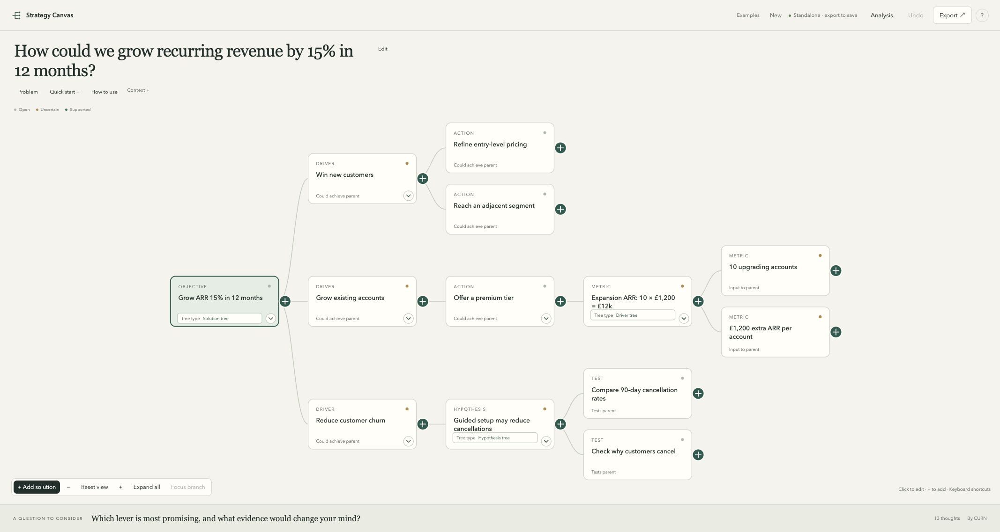

Explore ↗
Collect possibilities before choosing a direction.
What could the spare room become? ├─ Paid workshops │ └─ Beginner writing sessions ├─ A quiet reading room └─ Keep it as storage
Explore what could work, test an explanation, or work through the numbers.
Each opens an editable example. All cases are fictional.
Collect possibilities before choosing a direction.
What could the spare room become? ├─ Paid workshops │ └─ Beginner writing sessions ├─ A quiet reading room └─ Keep it as storage
Break a question into answerable parts.
Could paid workshops be viable? ├─ Would enough people pay? │ └─ How many would book at £20? ├─ Can we deliver it? │ └─ Will it fit five staff-hours? └─ Would it cover relevant costs? └─ What attendance breaks even?
Test an explanation, including what could disprove it.
Later start reduced attendance? ├─ Did the decline follow the change? ├─ Do customers report time clashes? ├─ Did old-time sessions hold up? └─ Could the topics be less appealing?
Show the arithmetic behind a number.
Break-even: £120 ÷ £15 = 8 people ├─ Fixed cost: £120 per event └─ Contribution: £20 − £5 = £15 ├─ Ticket price: £20 per person └─ Variable cost: £5 per person
Connect an improvement to levers and possible actions.
Reduce Saturday queue time ├─ Fewer arrivals at peak time │ └─ Offer quieter collection windows ├─ More peak service capacity │ └─ Staff a second till └─ Shorter transactions └─ Prepare collection orders early
Clarify what a good choice should provide.
What makes a suitable job? ├─ Financial security │ └─ Reliable income covers commitments ├─ Autonomy │ └─ Control over how work is done └─ Learning └─ Regular practice and useful feedback
Compare choices when outcomes are uncertain.
Hold or cancel the event? ├─ Hold the event │ └─ Attendance is uncertain │ ├─ Strong: 60% → +£200 net │ └─ Weak: 40% → −£100 net └─ Cancel the event └─ Net payoff: £0
Connect customer needs to solutions and assumption tests.
Increase completed bookings
└─ Find a time that fits
├─ Flexible-date search
│ └─ Can users find an acceptable slot?
└─ Availability alerts
└─ Does the alert arrive in time?Show a conclusion, its reasons and the counterargument.
Try one workshop first (provisional) ├─ Recurring demand is unproven │ └─ Interest is non-binding (assumed) ├─ A pilot can test paid uptake ├─ One event limits commitment │ └─ No ongoing contract (assumed) └─ One event may not predict repeats
A fictional growth question, explored with several tree types.
